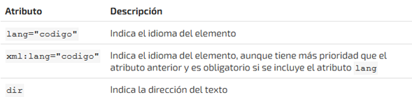
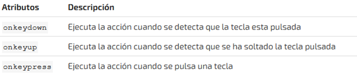
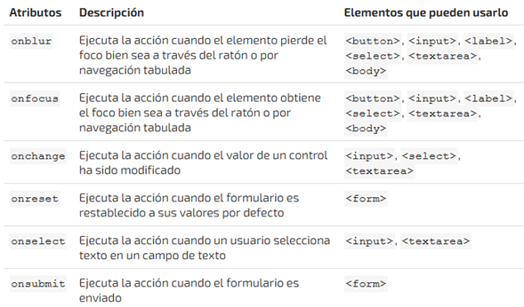
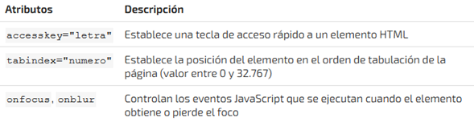

Aunque cada una de las etiquetas HTML define sus propios atributos, encontramos algunos comunes a muchas o casi
todas las etiquetas, que se dividen en cuatro grupos según su funcionalidad:
-Atributos básicos
-Atributos de internacionalización
-Atributos de eventos
-Atributos de foco
Atributos básicos.
Atributos de internacionalización.
Estos atributos se utilizan en aquellas páginas que muestran sus contenidos en varios idiomas y las que quieran
indicar de forma explícita el idioma de sus contenidos

Atributos de eventos.
Estos atributos se utilizan en las páginas web que incluyen código JavaScript para realizar acciones dinámicas sobre
los elementos de la página.
Pueden ser utilizados por: todos los elementos.
Pueden ser utilizados por: body.
Pueden ser utilizados por: formularios y body.

Pueden ser utilizados por: varios.

Atributos de foco.
Se le denomina foco o focus, cuando un control o elemento del documento ha sido seleccionado. Cuando ese elemento
deja de estar seleccionado, "pierde el foco" y es el nuevo elemento seleccionado el que se dice que tiene "el foco".

Valores:
Son aquellos que ponemos dentro de las comillas, para agregar imagenes, que tan grande o pequeña debe ser la
imagen,
para los colores y otras opciones de nuestra pagina para crear la.
Como se muestra en la siguiente imagen.